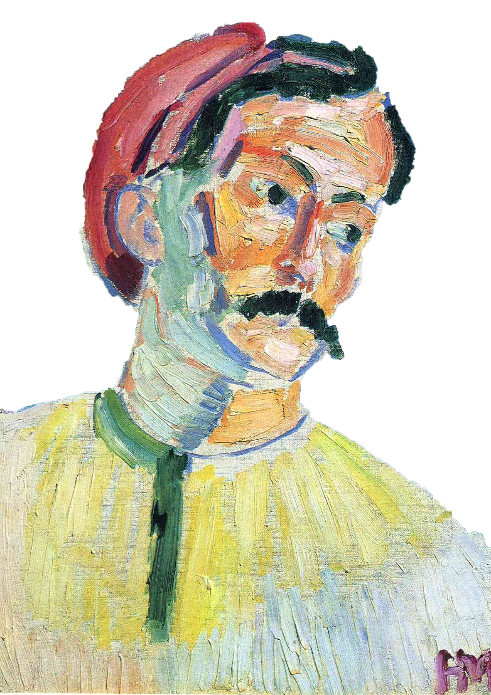
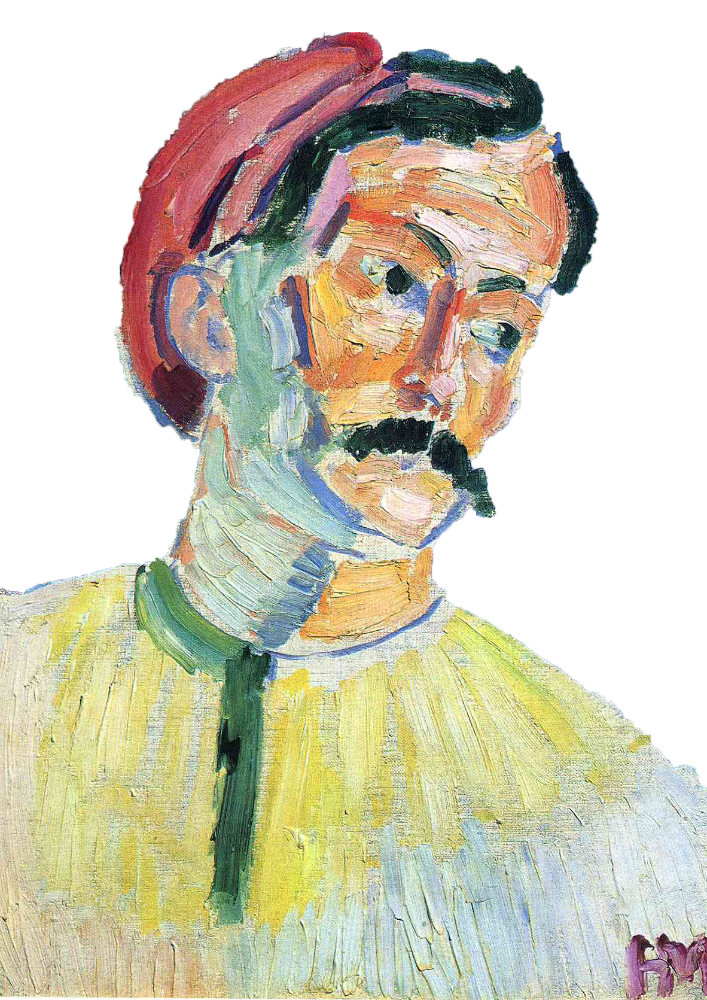

Albert Marquet
Marquet nació el 27 de marzo de 1875 en Burdeos. En 1890, con el apoyo de su madre, va a París a estudiar a la Escuela Nacional de Artes Decorativas, donde conoce a Matisse, con quien entabla una gran amistad. En 1894 ambos entran en la Escuela de Bellas Artes y estudian bajo la dirección de Moreau. Entre 1894 y 1904 va al Museo del Louvre y hace copias de los grandes maestros (Chardin, Poussin, Veronés y Claude Lorraine). En estos años su círculo de amigos son Matisse, Mangin y Camoin. En 1898, de nuevo con Matisse, entran en la escuela de Eugène Carrière, donde conocen a Derain.
En 1901 participa con diez cuadros en el Salón de los Independientes; son paisajes de Arcueil y Luxemburgo. En 1905 participa en el Salón de Otoño en la primera exposició n del grupo fauvista y al año siguiente empieza a trabajar con la galería Berheim Jeune. En 1912 va por primera vez a Tánger con Matisse y Camoin, y luego viajará al norte de África, sobre todo a Argelia, repetidamente a lo largo de su vida.

Marquet pintaba con amarillos mates, violetas apagados o azules, el negro, sólo para conseguir contrastes fuertes con colores claros para las formas, por ejemplo para los troncos de los árboles, y en algunos paisajes urbanos para delinear las figuras.
En 1925 hace una importante exposición en la galería Berheim Jeune con paisajes pintados en Marsella. Durante toda su vida viajó constantemente por Europa y el Norte de Africa y abandonó el estilo fauvista. Sus cuadros más conocidos tienen por tema los puentes de París.
Marquet falleció de manera inesperada el 14 de junio de 1947, en París; a causa de un ataque de vesícula biliar. Posteriormente se descubrió que tenía cáncer.